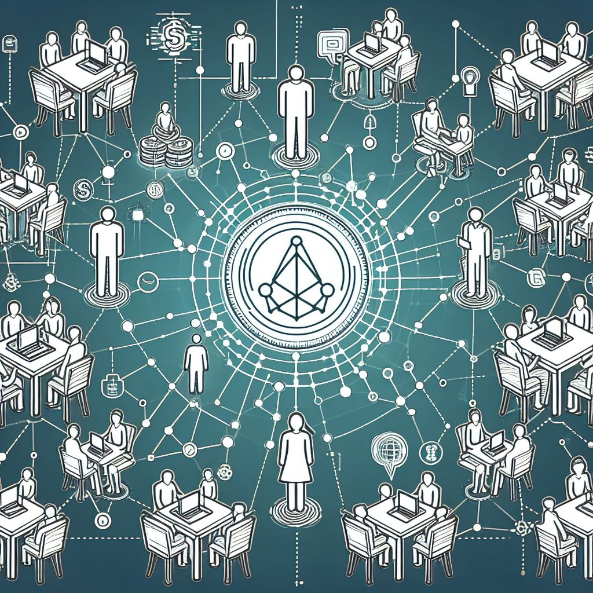

THIS PAGE IS A WORK IN PROGRESS
Library
The following are the wings of the
library:
Welcome

The current page.
The Network

We are focusing on growing the
wealth of everyone we can through
agorism. Agorism is the practice of
circumventing the State through
counter-economics.
What is Voluntaryism?

Voluntaryism is the moral philosophy
that all forms of interaction should
be voluntary, and that the only just
use of force is defensive force. We
abide by the Non-Aggression
Principle (NAP) which dictates that
no action be taken that violates
another’s consent if not in
self-defense.
Voluntaryism, Plus

We are practicing voluntaryism with
a twist. Voluntaryism plus
intention. To get a more concise and
potent result, we are more concise
with our parameters. Those
parameters are simply: are you
making the world more free for just
yourself? Or does your plan make the
world more free for others as well?
Our Plan

Anyone in the next 100 years could
find this set of instructions and
re-create what we are doing now. But
there will be no need to start from
scratch. As soon as the number of
people are proliferating the ideas
contained herein, there will be more
aversions and more resiliency
because of them.
Caravan Welcome Outpost

Welcome to the agora! This is the
wolcome desk of Caravanarchy. Here
you will find a year-round
marketplace to exchange ideas and
goods.
The Outreach Caravan

Both network host (accepting new
members to be vetted for further
network involvement) and welcome
outpost, the caravan blends these
capabilities while retaining wings
focused on outreach, protection, and
whatever other topics the current
team cares about.
Chew’s Wisely

Our “Ice Cream
Philosophy” is that we strive
to bring to market the finest
quality Homemade Ice Cream products,
sourcing ingredients from as many
agorist sources as possible,
sourcing only the highest quality
ingredients.
This means no gums or perservatives,
all organic ingredients (when
possible), and raw heavy cream when
we have a quality agorist source
nearby.
We are a private membership
association and we pride ourselves
on our handmade small-batch process
to ensure the ice cream is fresh and
customized to the occasion.
Intro

This section contains information on
the avenues that lead into into the
more protected areas of the network.
Admissions Portal

Want to join the inner realm? This
is an overview of what is required
to move forward into the protected
areas of the network and introduces
the avenues one may take to achieve
this position.
Network Hosts

One may spend time with a network
host who has pledged to host you on
the property of their choosing while
introducing you to the network and
assessing your understanding of the
tenets of the network.
Guilds

Guilds are like guilds in which one
may learn a trade or practice a
trade. Preferred Guilds follow
certain guidelines outlined herein.
Freedom Guard

You can form a freedom guard devoted
to one or many specialities.
Security Mesh

The security mesh consists of all
people who know that the state is
illegitimate and who are able in
some way or another to be available
to help someone in need without
using state intervention.
Downfall of The Greats

A discussion of popular pieces of
media, especially those that are
beloved in the anarchist community,
where they fail philosophically and
how that may hold us back.
Library

This is a repository of information
in the form of links to writings on
agorism and voluntaryism.
You and The Network
Intro

How will you create your new role in
the life you were meant to live?
You and the Network

What is your comfortability level
with risk? This can help you
determine on what level do you want
to become involved in the network.
We need people on all levels, from
spreading the word to delivering
goods to the network.
Transcending Location

A location is only as safe as the
contingency plan and its
feasibility. Any one location is
vulnerable. Having a backup is a
step up. Having a huge network of
people is closer to the objective by
far.
New Lexicon

We need to have easily referenced,
better versions of things and ways
to say it. We have a lot to leave
behind. There are certain aspects of
the current paradigm that have been
holding us back. The effort to adopt
a new paradigm can be aided by the
addition of a new language and
concepts to fill in the gaps.
Start Here

A few questions to determine how you
should traverse this guidebook.
Entry Guide

Determine how you can change your
life depending on what you are
passionate about and what need to
change in your life.
Freedom Prompts

Some questions to help you determine
what you would like to change about
your life.
Anarchy Degrees

A self assessment to help you create
a larger vision for what you could
be doing with your life based on
gradual levels of improvement in
areas of your choosing.
To Be Happy

Reasons why the state is unnatural
and how that may well lead to its
dissolution over time.
Intro

Bounty Board

A board where agorists can post the
goods and services they need or want
as well as what they offer. There
are distinctions between inner realm
and outer-realm.
Festivals

A list of festivals and agorist
markets.
Map

A page for maps of both the inner
and outer realm.
Events

A listing of events both recurring
and non-recurring..
Links

Links to other agorist projects.
Important Anarchist Books
Links to Anarchist Websites